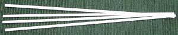
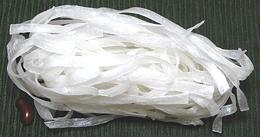

SAFARI
Users
General & History
The earliest known noodles have been found in China. Due to a lucky accident (lucky for us - not for the inhabitants of the town of Lajia), a fresh bowl of noodles was inverted and buried in mud and silt. An air pocket under the bowl protected and preserved the noodles, dated to 2000 BCE. These noodles, about 20 inches long, were made from foxtail millet (Setaria italica) and broomcorn millet (Panicum miliaceum).
While in Europe, "pasta" is made almost entirely from hard winter wheat and water, and "noodles" are made form softer wheat, and perhaps with egg, Asian noodles are made from a number of grains, seeds and starches. While wheat is popular in the northern regions, noodles are also made from rice, bean starch, arrowroot starch, tapioca starch, sweet potato starch, buckwheat and other materials.
Each of these materials has its own unique properties, so these noodles are used in many ways, but "Italian style" with pasta sauces is uncommon in Asia today. Extruded shapes such as are common in Europe are not much made, because they can only be made with hard winter wheat, or softer wheat and plenty of egg. Most Chinese "Egg Noodles" are made with yellow dye, not egg.
While the types of noodles used in China, Korea, Japan and Southeast Asia do vary with region, as do cooking techniques, we do not separate them here by country because each type is too widespread to localize that precisely.
Wheat Noodles
Cha Soba- [245; Green Tea Noodles]I've put these soba under wheat because they don't have enough buckwheat to tint them brown. They have barely enough green tea to give them a slightly green tint, but they have a strong green tea aroma. Made by Hakubaku Australia, 7-3/4 x 0.040 x 0.065 inches. Ingred: organic wheat flour (95%), organic buckwheat flour (3%), green tea powder (2%), water. Somen- [161 Somen (Japan); Somyeon (Korea)]
Very popular in Japan, these are very thin wheat noodles usually used
in clear soups, added in the last few minutes as they cook very fast.
Identical noodles are used in Korea, but much more widely, appearing
in many both hot and cold dishes.
Made in Japan, round, 8 x 0.040 inches. Ingred: wheat flour, water,
salt.
Ramen- [377]Extremely popular in Japan, these are thin wheat noodles with a spcial formula including Potassium and Sodium Carbonate. These noodles cook in about 8 minutes, but the Carbonates enable them to stay springy, intact, and without swelling for over 20 minutes. This makes them exceptionally suitable for soups. 7-3/4 x 0.06 inches (197 x 1.5 mm). Wheat flour, water, salt, potassium carbonate, sodium carbonate, beta carotene (color). Made in Japan. Details and Cooking. Udon, Dried- [378]While fresh Udon are commonly round, dried Udon are more often rectangular. The photo specimens were 7-3/4 x 0.12 x 0.07 inches (200 x 3.0 x 1.8 mm). Made in Japan. Package said to boil 12 minutes, which I find to be the minimum. they were still holding together well at 20 minutes. Ingred: wheat flour, water, salt. Korean Wide Noodles[343, Chopped noodle]
Used much less than the Somen type, this dried noodle imitates the
fresh "cut noodles" made in households. Someone with a less than
perfect grasp of English named them "Chopped Noodles".
Made in Korea, 0.130 x 0.040 inches by 8-5/8 inches long. Ingred:
wheat flour, water, salt.
Shanxi Noodles- [232]These wide noodles are very popular in northern China (Shanxi province is a little southwest of Beijing) They are usually 0.40 inch thick, 0.29 inch wide and 7.3 inches long. Wheat flour, salt. Made in China. Ramen Instant NoodlesThese are most often sold packaged with some broth powder, but are sometimes available without. Most sold in the USA are made in USA, by Japanese companies, and are the same as their Japanese products. Details and Cooking. Chinese Style, Thin- [216]This is one of the most common of the Chinese style "egg" noodles (many of which have yellow dye rather than egg). The FDA used to require these to be labeled "artificial noodle", but now "Asian noodle" or "Chinese style noodle" are accepted, but some still use the old designation. Packed in 1-3/4 ounce skeins of noodles 0.040 inch diameter, made in Hong Kong. Ingred: wheat flour, corn starch, egg, FD&C Yellow #5; alternatively wheat flour, corn starch, egg, lye, water, FD&C Yellow #5. I usually select brands that have actual egg in them. For details see Chinese Egg Noodles, Thin. Chinese Style, Wide- [291]A wider version of Chinese Style "egg" noodles (many of which have yellow dye rather than egg). The FDA used to require these to be labeled "artificial noodle", but now "Asian noodle" or "Chinese style noodle" are accepted, but some still use the old designation. Packed in 1 ounce skeins of noodles 0.12 inch wide and 0.025 inch thick, made in Vietnam. Ingred: wheat flour, egg, water, lye, vegetable oil. I usually select brands that have actual egg in them. Crispy Chow Main Noodles- [341]
These are not authentically Chinese. They probably originated
in the United States and are typical of "Chinese-American" restaurants,
which serve a cuisine much different from any found in China. They are
served as an appetizer, sprinkled over Chinese salads, and sometimes
topped with a stir fry with plenty of sauce. 2 inch randoms 0.12 inch
diameter; enriched wheat flour, vegetable oil, water, salt,
4% trans fats.
Shanghai Noodles- [351]These are popular in Zhejiang province of southeastern China, and are sold fresh in Asian markets. They are about 0.13 inch diameter. Some brands make them rectangular, but I prefer round. They are made up into loose hanks and sold from the refrigerated section. Keep them refrigerated and use within a few days to avoid mold. Cook them by dropping them into rapidly boiling water. When the water is back to a boil, they should be done in between 2 and 4 minutes depending on brand. They should remain chewy. Drain, rinse in cold water and tumble with about 1 t oil per pound to prevent sticking. Wheat flour, water - made in USA. Subst: Japanese fresh Udon noodles of similar size. |
Bean Starch Noodles
[Cellophane Noodles; Glass Noodles; Sotanghon (Philippine); Tangoon (Taiwan, Malaysia); Harusame (Japan); Phing, Fing (Tibet); Falooda (India, Pakistan); Bun tau (Vietnam); Saifun, Fensi, dongfen (China); Soun, Suun (Indonesia). Wun sen (Thai)]
Caution:
Bean Starch noodles must not be confused with rice noodles, which sometimes look exactly the same when dry. Their cooking properties are totally different. These noodles are made from mung bean starch, not rice.Caution:
Always check that you buy these noodles made in Taiwan or Vietnam. Mainland Chinese makers have been found to use cheaper cornstarch, then correct the color with Lead (of course), but also Aluminum, and toxic Sodium Formaldehyde Sulfoxylate (Rongalite).
Bean Thread Noodles- [223]This is the most common form of bean thread noodles in North America. They are made up into 1.8 or 2 ounce skeins, which is why many recipes call for 2 ounces of them. These are about 0.030 inches diameter. Ingred: bean starch. The photo speimens were made in Taiwan. Mung Bean Vermicelli- [224]This is a thicker form than the bean thread. These are about 0.040 inches diameter and 21 inches long bent in half. Instructions is to cook at more than 180°F for 5 to 6 minutes, then quench in cold water. Ingred: mung bean flour, starch, water, protein. These were made in Taiwan. Bean Noodles, Broad- [292] Here we have a much wider version of bean starch noodle, 0.19 inch wide and 0.030 inch thick, packed in 1-3/4 ounce skeins. Made in Vietnam. Ingred: mung bean powder, potato starch, water. |
Rice Noodles & Rice Cakes
These noodles and cakes come in a great variety of forms and shapes, are used in many different ways, and all are very important throughout East and Southeast Asia, so they have their own Rice Noodles and Rice Cakes pages.
Caution:
Some of these look just like Bean Thread noodles, but must not be confused. Their cooking properties are totally different, and they will break up into tiny pieces if cooked like bean starch noodles.Buckwheat Noodles
These are usually mostly of wheat flour so they hold together well, but they still have a distinctly buckwheat flavor, so we're giving them a separate section.
Soba- [160]Very popular in Japan, usually served cold with a salad-like dressing. These are easily recognized by their fairly dark tan color. Made in Japan, 7.75 x 0.050 x 0.055 inches. Ingred: enriched wheat flour, buckwheat flour, yam, salt, water. |
Cornstarch Noodles
These seem to be a specialty of the Philippines, where they must be quite popular - judging from the number of brands and packages on display at my local Philippine market here in Los Angeles. They have just a little more flavor than bean starch noodles, which I imagine to be corn-like.
Bihon- [257; Cornstarch Sticks]These were purchased at a Philippine market in Los Angeles (Eagle Rock). The package says it is very important they be washed before cooking. In simmering water they took 10 minutes to tenderness. By 15 minutes they were starting to get too soft. For braised dishes they should be soaked and added within the last 10 minutes. Product of the Philippines, .040 inch diameter, sold in 8 and 16 ounce skeins. Ingred: cornstarch, water. Bihon, Golden- [256; Cornstarch Sticks]
These were purchased at a Philippine market in Los Angeles (Eagle
Rock). In simmering water they took 10 minutes to tenderness. By 15
minutes they were starting to get too soft. For soups and stews they
should be rinsed, then added within the last 10 minutes. Product of
the Philippines, .025 inch diameter, sold in and 16 ounce blocks
containing 4 cakes. Ingred: cornstarch, water.
|
Sweet Potato Noodles
Sweet Potato starch noodles are tough, much more durable than other Asian noodles. They take much longer cooking times, but they hold their shape and texture well in hot liquids.
Thin Korean Style- [230; Dangmyeon (Korea); Mien Hàn Quoc (Viet)] These noodles are very important to Korean cuisine. They are essential to
the famous Korean Japchae dishes, and other Korean specialties. They are
much less used in China. The photo specimens, made in China, were 0.06
diameter by 22 inches folded length. Ingred: sweet potato starch, sulfur
dioxide, water. They cook to a firm gelatinous consistency. Flavor and
texture are pleasant and they are much more durable in liquid recipes
than bean starch noodles.
Details and Cooking.
These noodles are very important to Korean cuisine. They are essential to
the famous Korean Japchae dishes, and other Korean specialties. They are
much less used in China. The photo specimens, made in China, were 0.06
diameter by 22 inches folded length. Ingred: sweet potato starch, sulfur
dioxide, water. They cook to a firm gelatinous consistency. Flavor and
texture are pleasant and they are much more durable in liquid recipes
than bean starch noodles.
Details and Cooking.
Broad Noodle- [229 Sichuan Hot Pot Noodle; Kuan Fen Tu Dou Fen Tiao (China)] These noodles are typically used in hot pots, salads or stir fries. Cooked
they are firm and gelatinous, with good durability in wet cooking. The
photo specimens were made in Sichuan, China, 0.45 inch wide, 0.045 thick and
11 inches long. Ingred: sweet potato starch.
Details and Cooking.
These noodles are typically used in hot pots, salads or stir fries. Cooked
they are firm and gelatinous, with good durability in wet cooking. The
photo specimens were made in Sichuan, China, 0.45 inch wide, 0.045 thick and
11 inches long. Ingred: sweet potato starch.
Details and Cooking.
Hot Pot Green Bean Stripe- [290]Why they are called "Green Bean" is a mystery to me, as they are made from Sweet Potato Starch. These are used in hot pots, as they will hold their form and texture much longer than most noodles. Their texture is like a stiff jelly. Made in Shanghai, China, 0.68 inch wide, 0.035 inch thick and 10.75 inches long. Ingred: sweet potato starch. Details and Cooking. |
Fern Starch Noodles
Fern Root Starch Vermicelli- [334]We found these noodles made from starch extracted from bracken fern root in one of the large Asian markets here in Los Angeles. Humorously, the designers of the package interpreted the "rn" in "fern" as an "m", so everywhere on the package it says fem instead of fern. Must have been a font problem. The strands were 0.063 inch diameter and 20 inches long, folded in the middle. Cooked, they resemble large, dark colored bean starch noodles, but have a lightly earthy flavor, while bean starch noodles are pretty neutral. These come from Sichuan China, ingredients: fern root starch, rapeseed oil. |
Arrowroot Noodles
Arrowroot Vermicelli- [242; Mien Dong Nguyen Chat (Vietnamese)]
These noodles, made in Vietnam, are a bit strange. Just soaked, they
have a somewhat unpleasant flavor. Boiled, whether soaked first or
not, mere seconds after they are tender they start becoming mush (but
the flavor is somewhat better). I can only presume this is supposed
to happen to provide a thickening effect in soup they are added to.
Ingred: pure flour of arrowroot (I presume this actually means
arrowroot starch), salt, water. 0.033 diameter, in 1.5 ounce skeins.
|